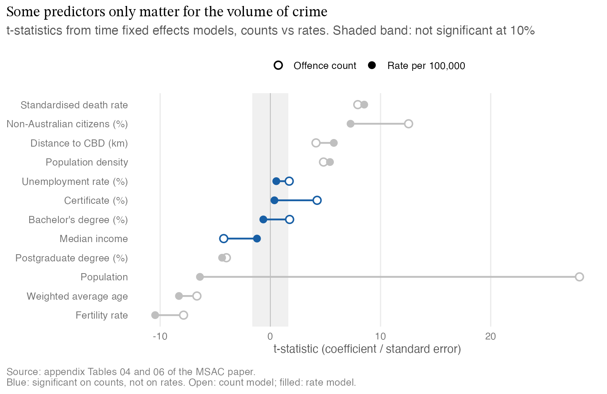

What predicts crime across Victoria’s LGAs?
- Problem: Find which demographic and economic factors explain differences in crime rates across Victoria’s 78 LGAs.
- Approach: A 2011-2024 panel of 1,092 LGA-years, modelled with pooled OLS, fixed effects, factor analysis, LASSO and elastic net.
- Result: Fertility and education go with lower crime, and unemployment and density with higher; elastic net predicted best (test R² 0.777).
- Skills: R, panel econometrics, fixed effects, regularisation, choropleth mapping, data integration.
The question
Which demographic and economic factors explain the differences in crime rates across Victoria’s 78 local government areas (LGAs) between 2011 and 2024? This was a student research project for the Monash Statistical Analytics Club (MSAC), written with Sanjana Bhavin Lakhpatwala and Sayali Choudhary.
Data and cleaning
The panel covers 78 LGAs over 14 years (1,092 LGA-years). It joins Crime Statistics Agency Victoria offence data to ABS census data and other public indicators. Census variables only exist for 2011, 2016 and 2021, so each value was carried forward to the following years. A census-years-only regression gave the same signs and significance, which supports the fill. Unemployment is published by region, so each LGA was given its region’s rate.
Method, and why this one
The models build on each other: pooled OLS as a baseline, then LGA, time and combined fixed effects, then factor analysis, LASSO and elastic net to deal with strongly correlated predictors. The time fixed effects model removes shocks that hit every LGA in the same year. The combined model also removes anything constant about each LGA, so what remains is change within an LGA over time.
A variable can point one way when you compare LGAs with each other and the opposite way when you follow one LGA over time.
Findings
Fertility rate and education go with lower crime, and unemployment and population density with higher crime. Citizenship mix is significant across models, likely reflecting wider demographic and urban patterns rather than a direct effect.
Bachelor’s degree share shows why fixed effects matter. It is positive in the time fixed effects model, since inner Melbourne is both highly educated and high crime, but strongly negative within LGAs in the combined model (-245.5, p < 0.001).

Elastic net gave the best out-of-sample accuracy and was selected for prediction. The fixed effects models remain the better tool for explaining change within an LGA.
What this means in practice
The paper’s conclusion points policy toward education, employment and community stability as levers for reducing crime locally. The wider lesson carries over to any regional data: a pattern across areas, like educated councils having more crime, can reverse within each area over time. Before acting on a cross-area comparison, check whether the effect holds once each area is compared with itself.
The full paper
Assumptions and limitations
As set out in the paper:
- Education and citizenship are census-only and were carried forward, which assumes they change gradually.
- Unemployment is assigned at regional rather than LGA level, which may add measurement error.
- Models use different outcomes (crime rate vs offence count) and transformations, so RMSE and MAE are not directly comparable and model selection leans on MAPE.
- Fixed effects cannot account for time-varying omitted variables such as policing intensity, policy changes or social programs.
- LASSO and elastic net coefficients are biased by shrinkage and should be read as predictive, not causal.
- Results are area-level associations, so applying them to individuals risks the ecological fallacy.